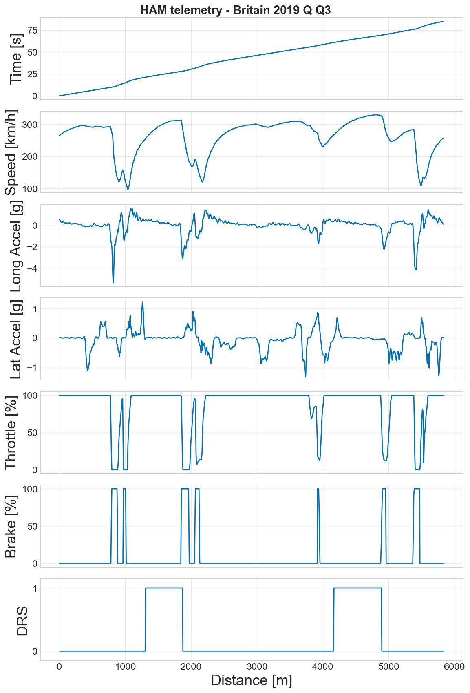
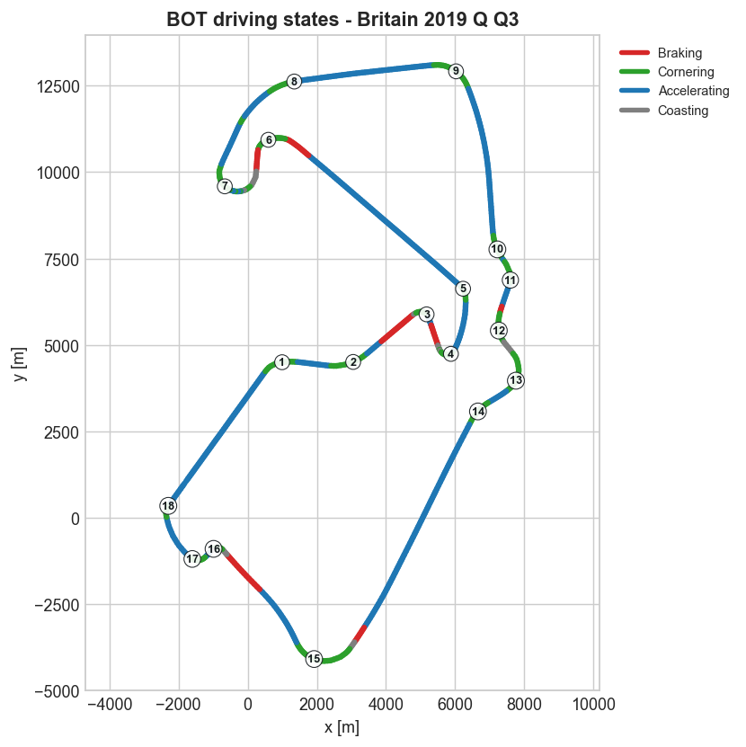
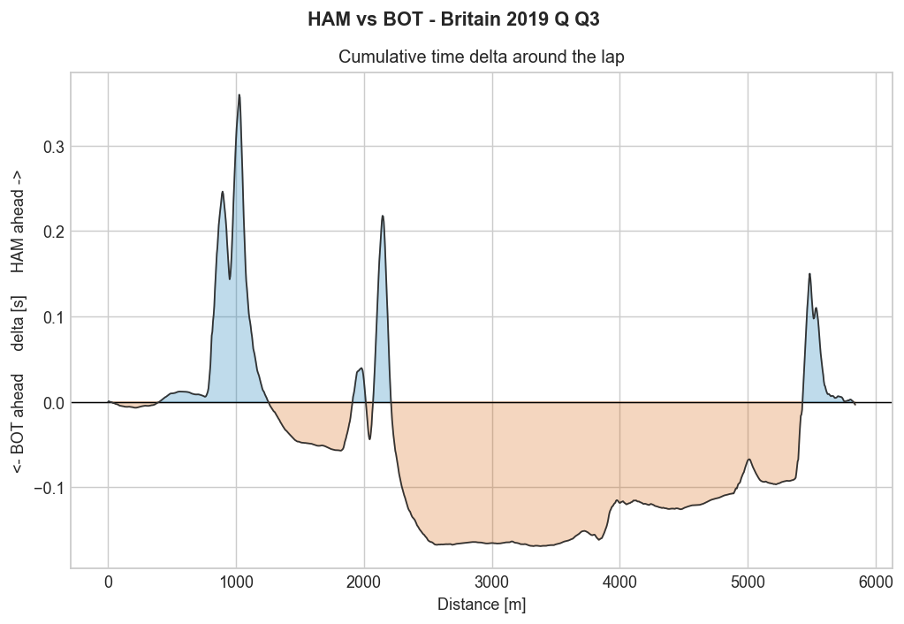

1. Data Processing
The pipeline begins by extracting time, speed, throttle, brake, and DRS data directly from FastF1. All of these metrics are then aligned by distance, and acceleration profiles are derived using speed and track positioning.
def classify_state(mp):
braking = mp['brake'] > BRAKE_THRESHOLD
cornering = (~braking) & (mp['latAcc'].abs() > LAT_ACC_THRESHOLD)
accelerating = (~braking) & (~cornering) & (mp['throttle'] > THROTTLE_THRESHOLD)
state = pd.Series('Coasting', index=mp.index)
state[accelerating] = 'Accelerating'
state[cornering] = 'Cornering'
state[braking] = 'Braking'
return state2. Driving-State Classification
The tool assigns a driving state to every sample using priority-based cut-offs. By evaluating brake pressure first, complex driver inputs like trail-braking deep into an apex are correctly identified as "Braking" rather than "Cornering".

3. Corner Identification
Lateral acceleration is translated into mapped corners, bridging any straight gaps under 15m and numbering them sequentially from Turn 1. This process is kept entirely independent of the state labels, ensuring that braking and exit zones remain anchored to a single corner.

4. Distance Alignment & Delta
To compare laps, both time-versus-distance curves are interpolated onto a common 5m grid. The smoothed delta gradients are then grouped into contiguous gain or loss segments of at least 15m to filter out any sample-by-sample noise.